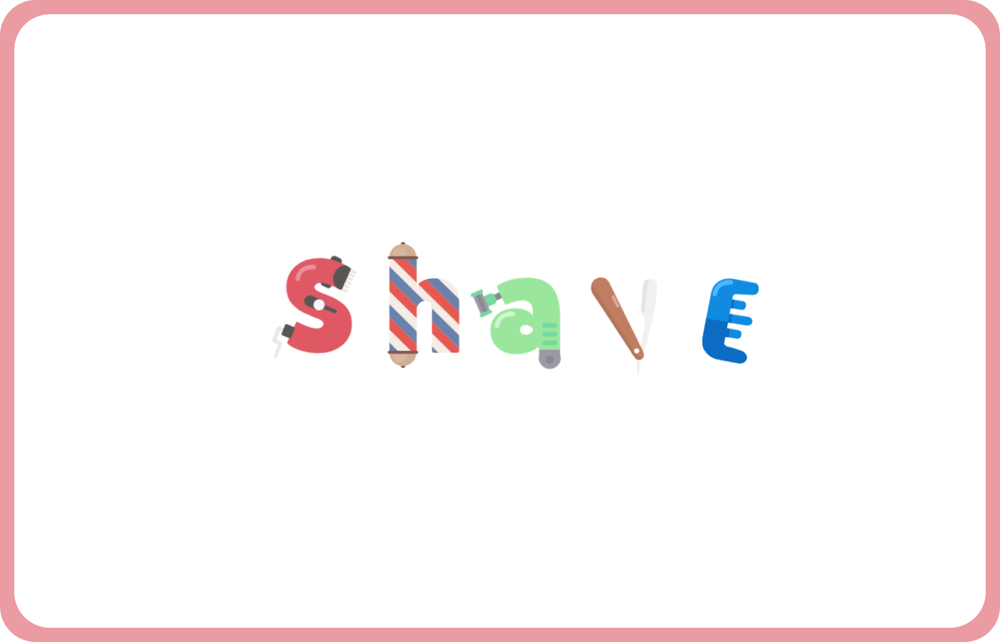

Role
Frontend Developer
Timeline
March 2024
Team
Me, myself & I
Tools
Illustrator, Visual Studio Code
For this assignment, each student was given five words, from which we had to choose one as the theme for our project. The objective was to create an animation centered around this theme. The challenge, however, was to animate the chosen word itself, transforming it into a dynamic word logo. The task was to design and animate a word logo that visually represented the theme.
For my project, I wanted to transform the mundane text into something more engaging and dynamic. I began by stripping away the plain, ordinary text, effectively shaving it off. Then, I brought the letters back, reimagined in the form of shaving tools and materials. This creative approach not only revitalizes the content but also introduces an element of surprise and visual interest, making the text itself an integral part of the design.